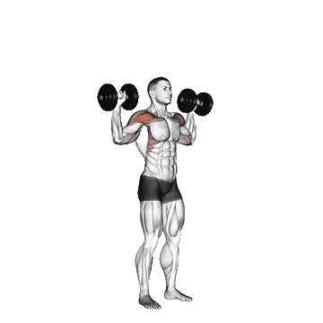

中級の平均重量
平均的な中級者の目安です。
男性
32 kg
女性
16 kg
ダンベルショルダープレス 平均重量 [1RM]
| レベル | ||
|---|---|---|
| 基礎 | 13 kg | 6 kg |
| 初級 | 21 kg | 10 kg |
| 中級 | 32 kg | 16 kg |
| 上級 | 45 kg | 23 kg |
| プロ | 60 kg | 31 kg |
注：これらの基準は平均的なリフターを基準にした1RMの目安です。体重や年齢などの個人的要因によって異なる場合があります。より詳細なデータは以下のとおりです。
ダンベルショルダープレス 基準重量(kg)
男性・体重別(kg)データ [1RM]
| 体重 | 基礎 | 初級 | 中級 | 上級 | プロ |
|---|---|---|---|---|---|
| 50 | 6 | 11 | 19 | 28 | 38 |
| 55 | 8 | 13 | 21 | 31 | 42 |
| 60 | 9 | 15 | 24 | 34 | 46 |
| 65 | 11 | 17 | 26 | 37 | 49 |
| 70 | 12 | 19 | 29 | 40 | 52 |
| 75 | 14 | 21 | 31 | 42 | 55 |
| 80 | 15 | 23 | 33 | 45 | 58 |
| 85 | 16 | 25 | 35 | 47 | 61 |
| 90 | 18 | 26 | 37 | 50 | 64 |
| 95 | 19 | 28 | 39 | 52 | 66 |
| 100 | 21 | 30 | 41 | 54 | 69 |
| 105 | 22 | 31 | 43 | 57 | 71 |
| 110 | 23 | 33 | 45 | 59 | 74 |
| 115 | 25 | 35 | 47 | 61 | 76 |
| 120 | 26 | 36 | 49 | 63 | 78 |
| 125 | 27 | 38 | 50 | 65 | 80 |
| 130 | 29 | 39 | 52 | 67 | 83 |
| 135 | 30 | 41 | 54 | 69 | 85 |
| 140 | 31 | 42 | 55 | 70 | 87 |
男性・年齢別データ [1RM]
| 年齢 | 基礎 | 初級 | 中級 | 上級 | プロ |
|---|---|---|---|---|---|
| 15 | 11 | 18 | 27 | 39 | 51 |
| 20 | 13 | 21 | 31 | 44 | 59 |
| 25 | 13 | 21 | 32 | 45 | 60 |
| 30 | 13 | 21 | 32 | 45 | 60 |
| 35 | 13 | 21 | 32 | 45 | 60 |
| 40 | 13 | 21 | 32 | 45 | 60 |
| 45 | 12 | 20 | 31 | 43 | 57 |
| 50 | 12 | 19 | 29 | 40 | 53 |
| 55 | 11 | 18 | 27 | 37 | 49 |
| 60 | 10 | 16 | 24 | 34 | 45 |
| 65 | 9 | 15 | 22 | 31 | 41 |
| 70 | 8 | 13 | 20 | 28 | 37 |
| 75 | 7 | 12 | 18 | 25 | 33 |
| 80 | 6 | 10 | 16 | 22 | 29 |
| 85 | 6 | 9 | 14 | 20 | 26 |
| 90 | 5 | 8 | 13 | 18 | 24 |
女性・体重別(kg)データ [1RM]
| 体重 | 基礎 | 初級 | 中級 | 上級 | プロ |
|---|---|---|---|---|---|
| 40 | 3 | 6 | 11 | 17 | 23 |
| 45 | 4 | 7 | 12 | 18 | 25 |
| 50 | 4 | 8 | 13 | 19 | 26 |
| 55 | 5 | 9 | 14 | 20 | 28 |
| 60 | 5 | 9 | 15 | 22 | 29 |
| 65 | 6 | 10 | 16 | 23 | 30 |
| 70 | 6 | 11 | 17 | 24 | 31 |
| 75 | 7 | 11 | 17 | 25 | 33 |
| 80 | 7 | 12 | 18 | 25 | 34 |
| 85 | 8 | 13 | 19 | 26 | 35 |
| 90 | 8 | 13 | 20 | 27 | 35 |
| 95 | 9 | 14 | 20 | 28 | 36 |
| 100 | 9 | 14 | 21 | 29 | 37 |
| 105 | 10 | 15 | 22 | 29 | 38 |
| 110 | 10 | 15 | 22 | 30 | 39 |
| 115 | 10 | 16 | 23 | 31 | 40 |
| 120 | 11 | 16 | 23 | 31 | 40 |
女性・年齢別データ [1RM]
| 年齢 | 基礎 | 初級 | 中級 | 上級 | プロ |
|---|---|---|---|---|---|
| 15 | 5 | 8 | 13 | 19 | 26 |
| 20 | 5 | 10 | 15 | 22 | 30 |
| 25 | 6 | 10 | 16 | 23 | 31 |
| 30 | 6 | 10 | 16 | 23 | 31 |
| 35 | 6 | 10 | 16 | 23 | 31 |
| 40 | 6 | 10 | 16 | 23 | 31 |
| 45 | 5 | 9 | 15 | 22 | 29 |
| 50 | 5 | 9 | 14 | 20 | 27 |
| 55 | 5 | 8 | 13 | 19 | 25 |
| 60 | 4 | 7 | 12 | 17 | 23 |
| 65 | 4 | 7 | 11 | 15 | 21 |
| 70 | 3 | 6 | 10 | 14 | 19 |
| 75 | 3 | 5 | 9 | 12 | 17 |
| 80 | 3 | 5 | 8 | 11 | 15 |
| 85 | 2 | 4 | 7 | 10 | 13 |
| 90 | 2 | 4 | 6 | 9 | 12 |
注：表中のダンベルの重さはダンベル1個あたりの重さです。
記録と分析はShibaアプリで
重量、回数、成長の変化をまとめて確認できます。
テーブルの見方
| レベル | 説明 | 分布 |
|---|---|---|
| 基礎 | 正しいフォームを身につけ、1か月以上継続してトレーニングに励む。 | 下位 5% |
| 初級 | 6か月以上継続的にトレーニングに励む。 | 上位 80% |
| 中級 | ２年以上継続的にトレーニングに励む。 | 上位 50% |
| 上級 | 5年以上継続的にトレーニングに励む。 | 上位 20% |
| プロ | 5年以上当該メニューを専門にトレーニング。 | 上位 5% |